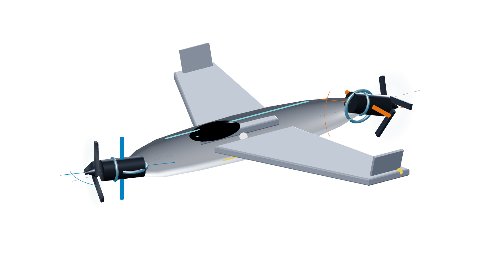

纵列双发正交单轴矢量推力构型
Web 3D · 非零正交摆角 · 矢量标注

01 / 构型与主控制通道
1
前发 · 拉力式
转子：CW（沿 +x
b
观察）
摆座：绕 z
b
· δ
f
= +18°
2
尾发 · 推进式
转子：CCW（沿 +x
b
观察）
摆座：绕 y
b
· δ
t
= +18°
CG
质心
物理力臂 a = b = 0.62 m
z_b 枢轴
y_b 枢轴
+x_b
两摆轴正交：z_b · y_b = 0
画面左侧为机头与 +x
b
灰虚线：零摆角；蓝/橙实线：当前电机轴
T
f
、T
t
∥ +x
b
；h
f
∥ +x
b
，h
t
∥ −x
b
单主翼 · 两侧翼尖小翼
非独立平尾
Web 几何非尺度；两摆角均取 +18° 作辨识示意
1
前发摆动 · 偏航主控
δ
f
>0 → F
y
>0 → M
z
>0
绕 z
b
；侧向分力 × 前部力臂
2
尾发摆动 · 俯仰主控
δ
t
>0 → F
z
<0 → M
y
<0
绕 y
b
；向上分力 × 尾部力臂
3
差速反扭 · 滚转主控
ω
f
≠ ω
t
→ M
x
净反扭矩控制滚转